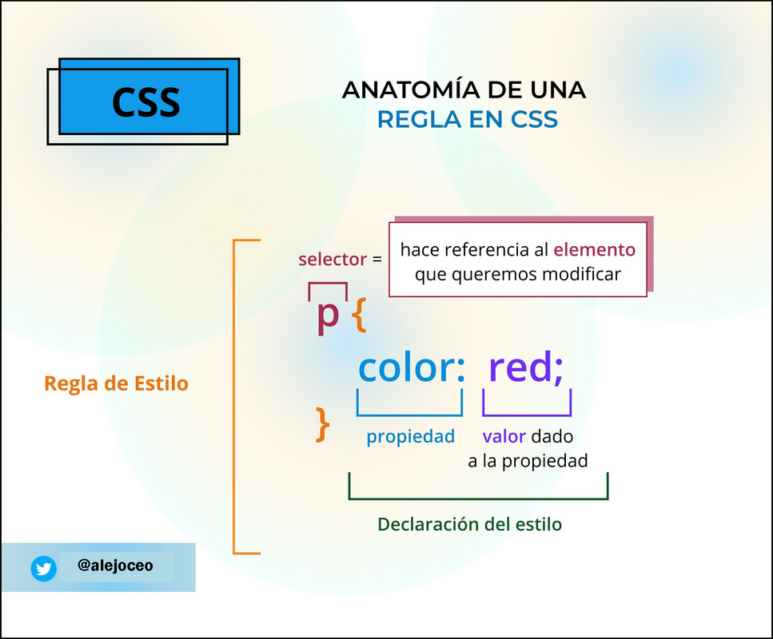

TP 06 - empezamos con el diseño
Joaquin Fernandez
1.1- ¿Qué significa CSS?
CSS significa “Cascading Style Sheets” (hojas de estilo en cascada)
1.2- ¿Para qué sirve el CSS? ¿Qué programa se utiliza para interpretar el CSS?
CSS sirve para darle estilo o diseño a la pagina HTML. algunos programas que se usan
son: fire fox - google chrome - edge
1.3- ¿A qué se llama regla de CSS?
Una regla css se compone de uno o más selectores seguidos de una declaración que consta de una o más
parejas de propiedad y valor. Un archivo css puede contener múltiples reglas.
1.4- ¿Cuál es la anatomía de la regla de CSS? Agregar imagen
explicativa y utilizando una lista descriptiva explicar sus elementos.

- Selector: El elemento HTML en el que comienza la regla. Esta selecciona elos elementos
a dar estilo en este caso, los elementos p. Para dar estilo a un elemento diferente, solo cambia el
selector
- Declaracion: Una sola regla como color: red; especifica a cuál de las propiedades del elemento
quieres dar estilo.
- Propiedad: Maneras en las cuales puedes dar estilo a un elemento HTML. En este caso, color es una propiedad
del elemento p . En CSS, seleccionas qué propiedad quieres afectar en tu regla
- Valor de la Propiedad: A la derecha de la propiedad, después de los dos puntos (:), tienes el valor de la
propiedad,
para elegir una de las muchas posibles apariencias para una propiedad determinada hay muchos
valores para color además de red.
1.5- ¿Qué es un selector en CSS?
En CSS los selectores se utilizan para delimitar los elementos HTML de nuestra página web a los que queremos
aplicar
estilo.
1.6- Identificar y definir los selectores: de ID, de clases, universal, de etiquetas, descendente
selector de id:En un documento HTML, los selectores de ID de CSS buscan un elemento según el contenido del ID del
atributo, asegurando que el ID del atributo seleccionado coincida con el valor dado en el selector.
1.7- Explicar brevemente utilizando una lista ordenada: ¿cómo funciona el CSS?
Como funciona el CSS
- El navegador carga el HTML
- El HTML se convertió en un DOM, que representa el documento en la memoria del ordenador, y se explica más
detalladamente en la segunda sección.
- El navegador buscará la mayoría de los recursos HTML, incluidas imágenes, vídeos y CSS vinculados al
documento. JavaScript aparece un poco más adelante en el proceso, pero no lo discutiremos más para evitar
complicar las cosas.
- El navegador analiza el CSS y ordena reglas en cubos según el tipo de selector, como elemento, clase, ID,
y calcula qué reglas deben aplicarse y a qué nodos en el DOM se aplica el estilo, el árbol de renderización.
- El árbol de renderización presenta la estructura en que los nodos deben aparecer después de aplicarle las
reglas.
- En la pantalla se muestra el aspecto visual de la página
1.8- ¿Cuáles son las tres formas para vincular CSS con HTML?
Una de las formas es Utilizando la etiqueta style En nuestro HTML y dentro de la etiqueta head utilizaremos
la etiqueta style es decir que los CSS se aplican al MISMO docuemnto HTML
Utilizando el atributo style En nuestro HTML aplicaremos estilos directamente a la etiqueta. Recordemos que
los atributos con características de un etiqueta.
Utilizando un archivo externo Esta opción es la que nos permite vincular un archivo HTML con un archivo CSS.
Los archivos CSS tienen extensión
1.9- Ingrese al sitio CSS Zen Garden http://www.csszengarden.com y analicemos el código HTML siguiendo los
siguientes pasos:
Hacer clic en View All Designs
Elegir dos diseños y abrirlo en pestañas distintas
En el primer diseño presiona ctrl+u (esta combinación de teclas permite ver el código HTML en el navegador)
En el segundo diseño presiona ctrl+u (esta combinación de teclas permite ver el código HTML en el navegador)
Escribir la URL de los dos diseños seleccionados
Responder: las etiquetas dentro de body ¿son iguales? ¿Qué es
lo distinto? ¿Qué contribuye al cambio de diseño?
Abrir los dos archivos CSS de los diseños seleccionados. ¿Son los mismos?
En líneas generales, el mismo HTML ¿puede tener diferentes diseños?
Diseño 1
Diseño 2
Las etiquetas del body si son iguales.
Lo distinto es el CSS, ya que toda la estructura es la misma.
Lo que contribuye al cambio del diseño son las diferentes etiquetas del CSS
2.0- Utilizaremos las siguientes propiedades de CSS. Completar la columna de valores posibles para cada propiedad.
| Propiedad |
Valores posibles |
| color |
orange - #009900 - rgba(34, 12, 64, 0.6) |
| background-color |
teal - rgb(153, 102, 153) - #777799 |
| font-size |
xx-large - 250% - 16px |
| font-weight |
300 - bolder - normal |
| font-style |
normal - italic - oblique |
| font-family |
"Gill Sans Extrabold", Helvetica, sans-serif - Courier, "Lucida Console", monospace |
| text-align |
start |
| text-decoration |
line-through - none - underline |
| text-transform |
none - right |
| letter-spacing |
normal - 0.4em - 1em |
| line-height |
1.2 - 120% - 1.2em |